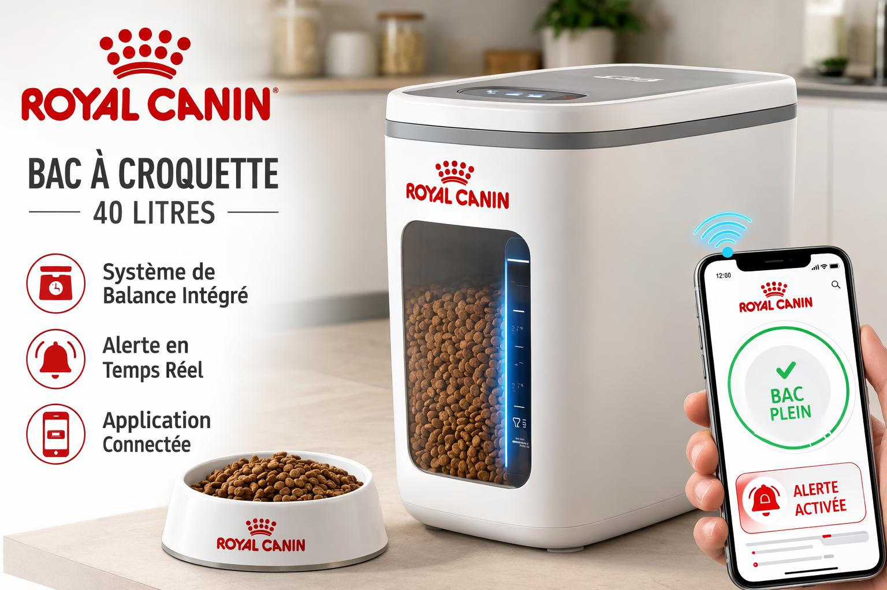

⚖️
Balance intégrée
Mesure automatiquement le poids des croquettes restantes, en continu et sans manipulation.
Nouveauté Royal Canin
Pesée intelligente & réapprovisionnement automatique. Dès que le boîtier détecte la zone critique, l'application commande vos croquettes — chaque mois, sans y penser.

40 litres
Tous les avantages
Mesure automatiquement le poids des croquettes restantes, en continu et sans manipulation.
Suivez le volume restant en temps réel depuis votre smartphone, où que vous soyez.
Dès que le boîtier détecte la zone critique, l'application commande vos croquettes pour le mois — sans aucune action de votre part.
Connexion simple et stable. Aucune mécanique complexe : juste une balance connectée.
Protège les croquettes de l'humidité et de l'air pour préserver tous leurs arômes.
Adapté aux sacs de croquettes de 10 à 15 kg. Une fenêtre transparente pour vérifier d'un coup d'œil.
Comment ça marche
Versez votre sac de croquettes dans le bac 40 L et fermez le couvercle hermétique.
La balance intégrée mesure le stock en continu et synchronise les données avec l'application.
Quand le niveau baisse, vous recevez une alerte et pouvez réapprovisionner en un clic.
Application connectée
Plus besoin d'y penser. Dès que le boîtier détecte que le stock entre en zone critique, l'application Royal Canin déclenche la commande de croquettes pour le mois et vous la livre. Vous gardez le contrôle total : validez, modifiez ou mettez en pause depuis votre téléphone.
Le compagnon intelligent de l'alimentation de votre animal. Design moderne, écran digital, fenêtre transparente et application connectée.
Fiche technique
Contact